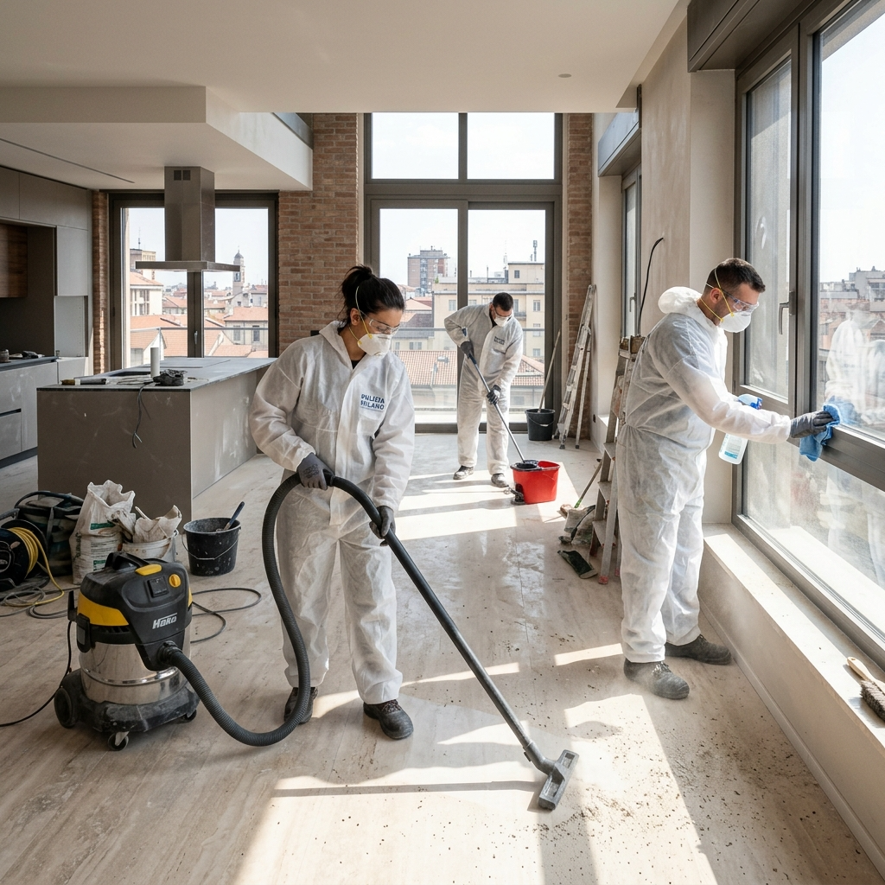

Pulizie Post-Cantiere
Dal cantiere alla casa dei tuoi sogni: ci pensiamo noi alla pulizia finale.
La ristrutturazione è finita. Inizia il bello.
Dopo una ristrutturazione o una costruzione, lo spazio è invaso da polvere di cemento, residui di pittura, silicone, calce, colla, polvere fine che si deposita ovunque — anche negli angoli più nascosti.
Il nostro team specializzato utilizza macchinari professionali e tecnica in più fasi per rimuovere ogni tipo di residuo edilizio, restituendoti lo spazio perfettamente pulito, pronto da arredare e abitare.
Interveniamo su appartamenti, ville, negozi, uffici, capannoni e qualsiasi tipo di immobile appena ristrutturato.

Post-RistrutturazioneLe Fasi dell'Intervento
Un processo in più step per garantire un risultato impeccabile.
Sopralluogo & Valutazione
Valutiamo la superficie, il tipo di residui presenti e i materiali da trattare per definire il piano di intervento ottimale.
Rimozione Grossolana
Raccolta e smaltimento di macerie, imballaggi, avanzi di materiali edili e rifiuti da cantiere.
Pulizia Profonda
Aspirazione industriale di polvere fine, rimozione di cementite, calce, silicone e residui di pittura da tutte le superfici.
Trattamento Superfici
Pulizia specifica per pavimenti, infissi, vetri, sanitari, rivestimenti ceramici e superfici delicate.
Lucidatura & Finitura
Lucidatura pavimenti, pulizia vetri con prodotti anti-aloni, igienizzazione sanitari e controllo finale qualità.
Consegna & Verifica
Ispezione finale con il cliente, consegna degli spazi puliti e pronti all'uso. Soddisfazione garantita o ri-interveniamo.
Domande sulle Pulizie Post-Cantiere
Dipende dalla superficie e dal livello di sporco. Un appartamento di 80mq viene completato in genere in 6-10 ore. Per spazi più grandi interveniamo con squadre multiple.
Sì, utilizziamo prodotti specifici e raschietti professionali per rimuovere residui di vernice, silicone, colla, cementite e altri materiali edili, senza danneggiare le superfici sottostanti.
Assolutamente. Il lavaggio vetri con prodotti anti-aloni professionali è incluso nel servizio standard post-cantiere. Puliamo sia le superfici interne che esterne accessibili.
Raccogliamo e rimuovere i rifiuti da cantiere (imballaggi, residui minori). Per lo smaltimento di materiali edili in grandi quantità (macerie, scarti strutturali) è necessario un servizio dedicato che possiamo consigliare.
Il cantiere è finito. Ci pensiamo noi.
Richiedi il sopralluogo gratuito e iniziamo subito.